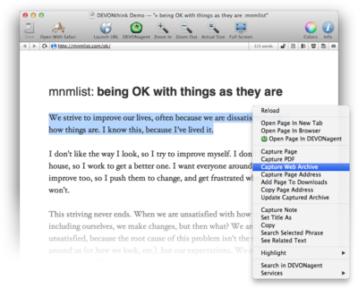

|

HTML views display web pages stored in the database or downloaded "live" from the Internet by using the Safari web browser engine of Mac OS X. DEVONthink Pro Office displays RSS news feeds like regular web pages. Pages are rendered similar to Safari or any other WebKit-based browser such as DEVONagent Pro.
News feeds item (RSS, RDF, Atom) are created in a database automatically for all items downloaded by a feed. Feed items are saved either as HTML or as a bookmark if the item has no content. An internal CSS stylesheet is used to style the output. You can change it in the Preferences. The icon of an unread feed item in list and split views is shown with a blue dot.
HTML views support the
Edit > Find
commands as well as the See Also & Classify drawer. To edit the source code of an HTML document, use the navgiation bar to switch from preview to plain text mode.
In editable web archives you can use, e.g., the highlighting commands from the
Format menu
or add the Color tool to the toolbar to change text colors. Editable web archives share many similarities with formatted notes.
Toolbar & shortcuts
Separate HTML or web browser windows feature a default toolbar set that is more web-like than text document windows. As with text document windows, this toolbar can be configured individually. Naturally, the DEVONthink Pro Office offers only tools for HTML views that are useful in a web environment.
Please find a list of shortcuts in the appendix.. Read more...
Contextual menu
-
Add Link: Allows you to enter a URL and makes the selected text a link to it.
-
Add Link to Downloads: Adds a link to the Download Manager panel.
-
Add Page to Downloads: Adds the page address to the Download Manager panel.
-
Add tag [word]: Tags the document with the selected word (only available if the word is not already a tag of the document).
-
Back / Forward: Navigates back and forth to previously visited pages.
-
Capture Frame: Captures the current frame in the selected format to either the current group or to the inbox.
-
Capture Image: Captures the selected image and saves it to either the current group or to the inbox.
-
Capture Link: Captures the selected link as bookmark to either the current group or to the inbox.
-
Capture Page: Captures the current page in the selected format to either the current group or to the inbox.
-
Capture Rich Text: Captures selected text to either the current group or to the inbox.
-
Copy Frame Address: Copies the frame URL to the Clipboard.
-
Copy Image Address: Copies the URL of an image to the Clipboard.
-
Copy Image: Copies the image to the Clipboard.
-
Copy Page Address: Copies the page URL to the Clipboard.
-
Copy: Copies selected text to the Clipboard.
-
Highlight: Highlights the selection in a web archive. Using this command on a selection again removes the highlighting.
-
Look up ...: Shows a definition, e.g. from OS X's Dictionary, for the selected text.
-
Open ... in New Tab: Opens selected element in a new tab.
-
Open Image in PhotoStickies: Opens the image in PhotoStickies.
-
Open Link in Browser: Opens a link in your default web browser.
-
Open Link in DEVONagent: Opens a link in DEVONagent Pro.
-
Open Link in PhotoStickies: Opens a link in PhotoStickies.
-
Reload: Reloads the page from the Internet.
-
Search Selected Phrase: Searches for the selected text as a phrase.
-
Search With Google: Searches for the selected text in Google.
-
Search with Spotlight: Searches for the selected text with Spotlight.
-
See [word]: Opens a drawer with documents related to the selected word.
-
See Related Text: Opens a drawer with documents related to the selected text passage (only available when more than one word is selected).
-
Set As Thumbnail: Set the document's icon to the selected image.
-
Set Name As: Sets the name of the document to the selected piece of text (needs to be less than 256 characters).
-
Share: Shared selected text via the available OS X sharing extensions (OS X Mountain Lion or later).
-
Update Bookmark: Updates the URL of this document to the current one, e.g., after navigating to a sub-page.
-
Update Captured Archive: Updates the contents of a web archive file with the live version on the Internet (only available in web archives).
For PDF pages, more options become available:
-
Automatically Resize: When checked, the zoom factor adjusts to the width resp. height of the browser window.
-
Next Page, Previous Page: Skims through the pages forward or backward.
-
Open with Preview: Opens the PDF in Preview.
-
Single Page, ...: Displays the PDF as single or double pages and either page-by-page (use the Next Page and Previous Page to skim through the pages forward and backwards) or continously.
-
Zoom Out, Zoom In, Actual Size: Zooms in or out of the document, or displays it in its actual size.
|